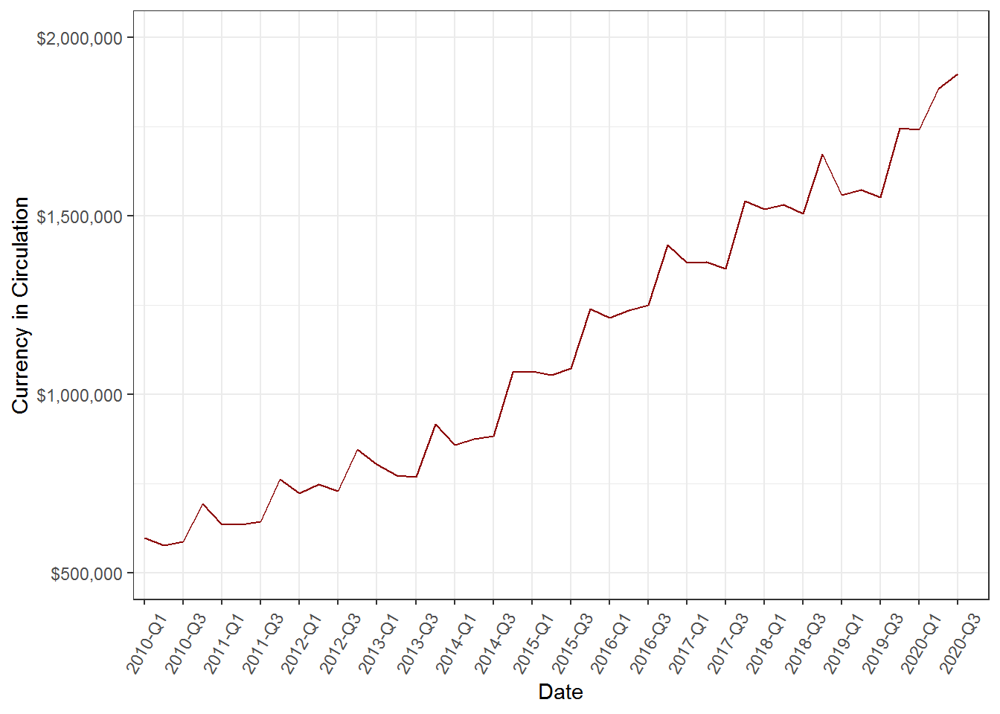
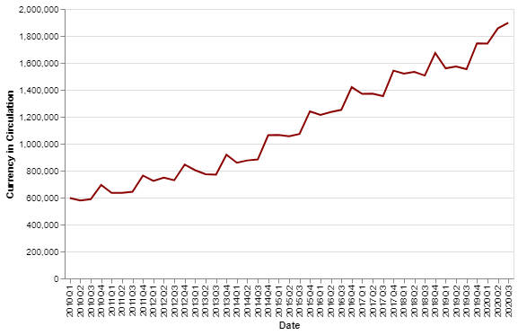

Parte 3 Acceso
Haver Analytics tiene distintas formas para consultar las series de tiempo que podemos usar:
3.1 Aplicación DLX
La forma más accesible y fácil para usar las series de tiempo de Haver Analytics es directamente desde su aplicación DLX View & Graph.
Figure 3.1: Ícono de aplicación de DLX.
En esta aplicación se pueden seleccionar las series de interés, ver su gráfica y bases de datos, lo cual es muy intuitivo. En la barra superior se encuentran opciones más avanzadas con las cuales se pueden añadir múltiples series, exportar las bases de datos a Excel, personalizar funciones utilizando las series, dar formato a la gráfica, entre otras opciones.
Figure 3.2: Aplicación DLX para Haver Analytics.
3.2 Add-in para Excel
Las series de Haver Analytics se pueden consultar directamente desde Excel utilizando el add-in DLX. Para verificar si se tiene instalado este complemento, en Excel deberías tener una pestaña que diga DLX.
Una vez seleccionada la pestaña, se deben seguir los siguientes pasos:
Seleccionar las series, dando click en el ícono DLXVG3, el cual abre un catálogo para seleccionar las series.
Seleccionar rango, usando el ícono DLXRanger, seleccionar la frecuencia y rangod e fechas de las series de tiempo.
Correr la consulta, la cual se puede correr para la hoja seleccionada dando click en “Retrieve Worksheet”, o todas las series del archivo dando click en “Retrieve Workbook”.
Figure 3.3: DLX add-in para Excel.
3.3 Consulta con R
El primer paso es instalar el paquete, corriendo la siguiente línea desde R o RStudio:
install.packages("Haver", repos="http://www.haver.com/r/")
Después habrá que llamar las librerías y fijar la ruta a las bases de datos con los siguientes comandos:
## Warning: package 'tidyverse' was built under R version 4.0.3## [1] "\\\\bmapps\\Bases de Informacion\\DLX\\DATA\\"Posteriormente hay que llamar a las series que nos interesen, y su metadata, las cuales se pueden graficar o manipular.
# ejemplo de consulta de serie
currency <- haver.data(codes=c("c273fmce"), database = "EMERGELA", freq="q", start=as.Date("2010-01-01", format="%Y-%m-%d"))
# cambio de nombre
colnames(currency)[colnames(currency) == "c273fmce"] <- "Currency_in_Circulation"
# ver inicio de serie para identificar su estructura
currency %>% head()## Currency_in_Circulation
## 2010-Q1 597193.9
## 2010-Q2 577815.5
## 2010-Q3 588091.8
## 2010-Q4 693423.1
## 2011-Q1 634711.8
## 2011-Q2 635323.3##
## HaverMetaData object:
##
## database code startdate enddate frequency numobs
## 1 emergela c273fmce 1989-01-31 2020-10-31 M 382
## descriptor
## 1 Mexico: Monetary Aggregates:..
##
## # of series records : 1
## database path : \\bmapps\Bases de Informacion\DLX\DATA\
## query date and time : 2020-11-30 22:53:09# convertir serie a data.frame
currency <- data.frame(currency)
currency$date <- row.names(currency)
# gráficar serie
currency %>% ggplot() +
geom_line(aes(x = date,
y = Currency_in_Circulation,
group = 1), color="darkred") +
theme_bw() +
theme(axis.text.x = element_text(angle = 60, vjust = 0.5)) +
scale_x_discrete(breaks = currency$date[seq(1, length(currency$date), by = 2)])+
scale_y_continuous(limits = c(500000, 2000000),
labels = scales::dollar) +
labs(x = "Date", y = "Currency in Circulation")## Warning: Removed 1 row(s) containing missing values (geom_path).
Para acceder a la guía completa del paquete Haver en R puedes:
correr el siguiente comando en RStudio:
help("Haver"), oingresar a la página oficial de Haver Analytics, dar click en Client area donde te pedirán un código de usuario el cual te lo pueden dar a través del correo data@haver.com, seleccionar Resources, después ingresar en Using DLX Data with Third Party Statistical Software, y selecionar la guía de usuario para R (Haver Analytics 2018).
3.4 Consulta con Python
El primer paso es instalar el paquete de Haver en Python, lo cual se puede relaizar de la siguiente manera:2
- interfaz: desde PowerShell/Terminal, correr el siguiente comando:
pip install Haver --extra-index-url https://urldefense.proofpoint.com/v2/url?u=http-3A__www.haver.com_Python&d=DwIGAg&c=AKs6EwELrBZKOG9H-C2eL9nCFyT6KLG5z2zMuwOnNTA&r=1xye9t3tMb09G6CmueM5cDX4CvWN9LC-lHqLRumN6Ls&m=OzpuOY3Klwky0-MpBXHqoFFIN7cUKTHg3FHaKc18LaY&s=yWr_0mX3wkhn60y5OE2ZDv2Hb-rIrBaVzLVAmE0ghkA&e= --trusted-host https://urldefense.proofpoint.com/v2/url?u=http-3A__www.haver.com&d=DwIGAg&c=AKs6EwELrBZKOG9H-C2eL9nCFyT6KLG5z2zMuwOnNTA&r=1xye9t3tMb09G6CmueM5cDX4CvWN9LC-lHqLRumN6Ls&m=OzpuOY3Klwky0-MpBXHqoFFIN7cUKTHg3FHaKc18LaY&s=KJOUUR_knntVVk2lyRqTBi8i7JLK_cfqqjh5Kcu1ReE&e=…si esto no funciona, se tiene que realizar una instalación manual.
- manual:
- ingresar a la página http://www.haver.com/Python/Haver/,
- descargar el archivo de formato
wheel, con extensión ‘whl’, que corresponda a la versión que tengas instalada de Python. Por ejemplo, el archivoHaver-1.1.0-cp35-cp35mwin_amd64.whlcorresponde a la versión instalada de Python 3.5 - Desde PowerShell/Terminal, ir a la carpeta donde se encuentre el archivo descargado en el punto anterior y correr el siguiente comando reemplazando ‘archivo_wheel’ por el nombre del archivo descargado
pip install archivo_wheel.whlYa instalado el paquete de Haver en Python, podemos empezar a trabajar ya sea directamente con Python o a través de alguna de sus interfaces (Jupyter Lab, Jupyter Notebook, Spider). Lo primero que tenemos que hacer es llamar las librerías y fijar la ruta a las bases de datos con los siguientes comandos:
# llamar librerias de Python
import Haver as hv
import pandas as pd
import numpy as np
import altair as alt
# fijar la ruta de haver
hv.path()## '\\\\bmapps\\Bases de Informacion\\dlx\\data\\'Posteriormente hay que llamar a las series que nos interesen, y su metadata, las cuales se pueden graficar o manipular.
# ejemplo de consulta de serie
currency = hv.data(codes=["c273fmce"], database="EMERGELA",
frequency="q", startdate="2010-01-01")
# cambio de nombre
currency = currency.reset_index().dropna().rename(columns = {"index": "fecha", "c273fmce":"Currency_in_Circulation"})
currency.fecha = [str(i) for i in currency.fecha]
# obtener metadata
currency_md = hv.metadata(codes=["c273fmce"], database="EMERGELA").T
# graficar
alt.Chart(currency).mark_line(color="darkred").encode(
x=alt.X('fecha', title="Date"),
y=alt.Y('Currency_in_Circulation:Q', title="Currency in Circulation"),
tooltip=['fecha', 'Currency_in_Circulation']
).properties(
width=500
)
Para acceder a la guía completa del paquete Haver en Python puedes:
- ingresar a la página oficial de Haver Analytics, dar click en Client area donde te pedirán un código de usuario el cual te lo pueden dar a través del correo data@haver.com, seleccionar Resources, después ingresar en Using DLX Data with Third Party Statistical Software, y selecionar la guía de usuario para Python (Haver Analytics 2020a).
References
Haver Analytics. 2018. “Package ’Haver’. Access Haver Analytics Databases from R.” Haver Analytics. http://www.haver.com/clientarea/docs/Haver_R_2.4_userguide.pdf/.
Haver Analytics. 2020a. “Haver Python Reference.” Haver Analytics. http://www.haver.com/clientarea/docs/Haver_Python_Reference_Guide.pdf/.